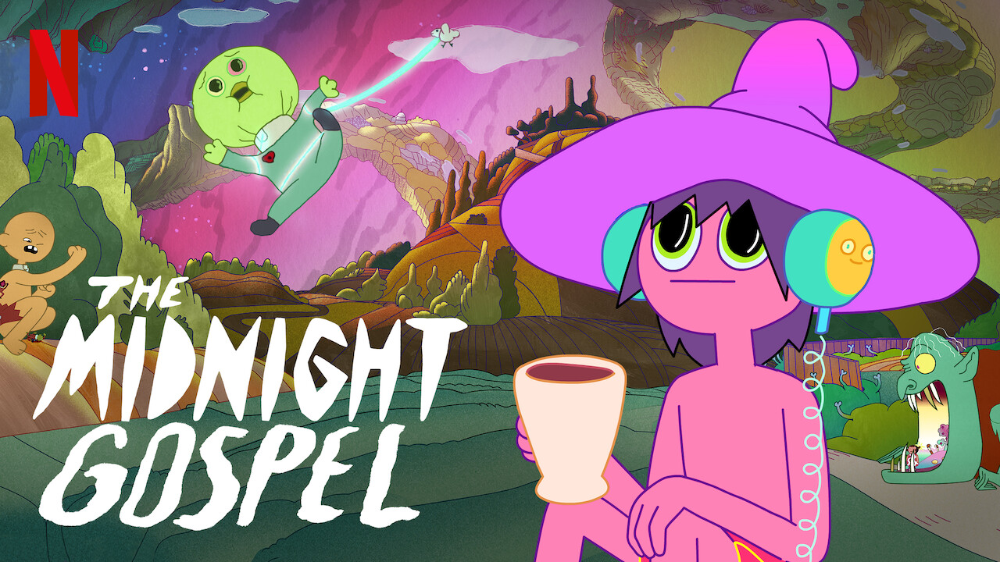
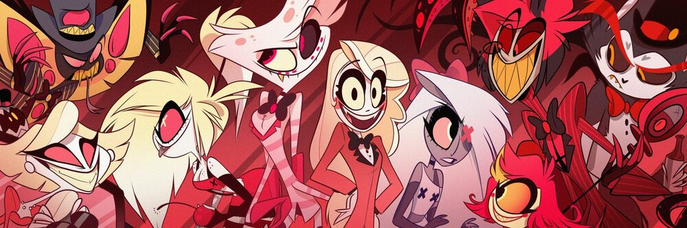

Just me being me!
HI! & Welcome to a little introductory of me. My name is Karolyn and I am here to tell you the many different things that make me, me! From my
home to my hobbies, friends to family, and a little more. First though, I will start with the base of me.
I was born in Charlotte, North Carolina on June 23 and although I lived in a few other states, I have spent most of my life in Charlotte. I am the oldest out of
3 on my mothers side with a 21-year-old sister and a 20-year-old brother. I am currently residing in Charlotte with my significant other, Jason, and our fur babies
Oktober and Adonis.
My likes, no need to talk dislikes
Many of my likes consist of using the same items (i.e my switch) but here are a few things I like to do with my spare time:
Playing: - Animal Crossing©
Spend time with loved ones
Watch cooking shows on Netflix
Dancing anywhere (Forewarning: I will embarrass you)
My Top Anime Suggestions
In my opinion, these are the anime suggestions I give to anyone interested in getting into anime or even a fellow weeb who has finished their list:
Made In Abyss (Warning: Would not reccommend to the faint hearted or children)
Nanbaka
Attack on Titan (Warning: Would not reccommend for the faint hearted or children)
Noragami
Black Butler
Dororo (Warning: Would not reccommend for the faint hearted or children)
Kakuriyo -Bed & Breakfast for the spirits-
Non-Anime mentions:
On Netflix: Midnight Gospel (Warning: Not for children)

